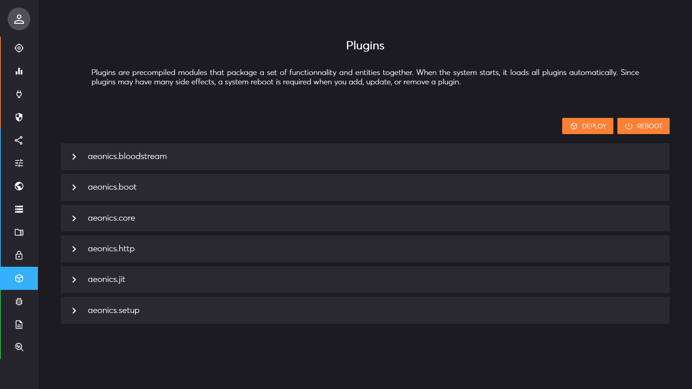
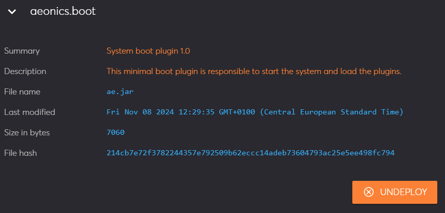
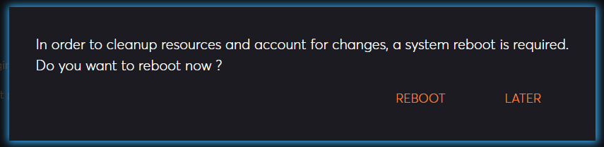
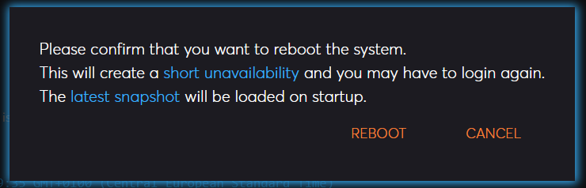
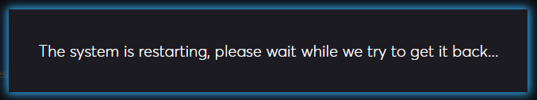
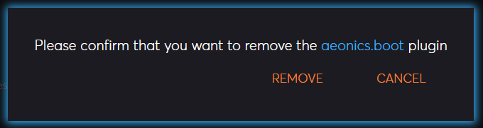

Management Interface Page: Plugins
Description
This page allows to deploy or undeploy plugins.
Whenever a change in plugins is performed, it is necessary to reboot the system to account for the new setup.
Important note: during the reboot process, the process on the server will be terminated. It will only restart if the system is setup as a service or has other mechanism to restart the process. If the system is not configured to restart automatically, the system will not restart and you will not be able to use it until a manual restart is performed.

Each plugin in the system is listed and shows basic information.

Deploy
Using the top right deploy button, you can upload a plugin file. If the plugin has the same file name as an existing plugin, it will overwrite it.
After a plugin is successfully uploaded, the system needs to be rebooted. A confirmation prompt is shown to reboot immediately, or later.

If you choose to reboot later, you can reboot at any time using the top right reboot button.

In any case, once the system reboots, it will be offline for a few seconds. The system will attempt to reconnect and displays an information dialog. When the connection is available again, the page will reload automatically.

Undeploy
You have the possibility to remove an existing plugin by clicking on the undeploy button at the bottom right corner of the information section.
Note that the functionalities offered by a plugin will no longer be available if you undeploy it.
A confirmation prompt is always displayed to avoid accidental deletions.

Like in the deploy case, the system needs to be rebooted. A confirmation prompt is shown to reboot immediately, or later.